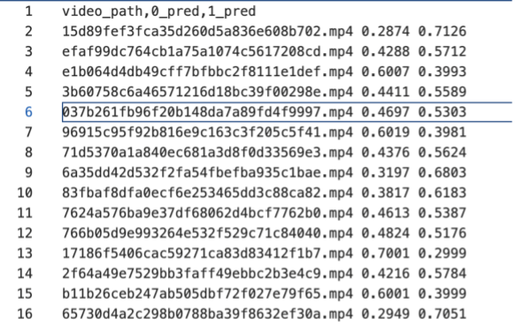
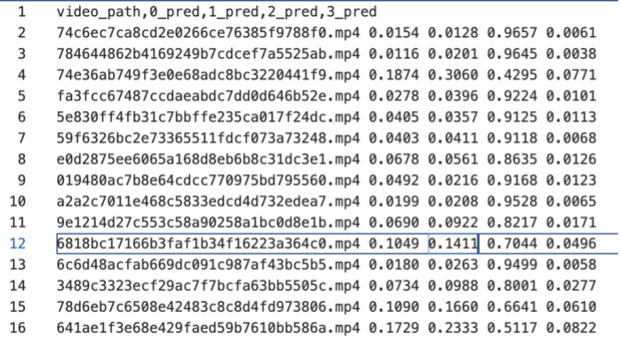

1. Overview
This competition focuses on General AIGC Audio-Video Detection. To counter the growing threat of advanced video generation (e.g., Sora2, Veo3.1), we present DDL-GAV, a large-scale multi-modal dataset of 100k+ audio-video samples. It covers realistic & animated styles, four categories (people, animals, landscapes, objects), three forgery types (fake audio–fake video, fake audio–real video, real audio–fake video), and 23 generation techniques. The goal is to advance detection and support "AI for Good".
Competition link: https://www.codabench.org/competitions/15769/
2. Evaluation Metrics
Task Components
- Real-Real: Both the audio and video modalities are real, meaning no forged modality exists.
- Fake-Real: The video modality is fake, while the audio modality is real.
- Real-Fake: The video modality is fake, while the audio modality is real.
- Fake-Fake: Both the audio and video modalities are fake.
- Detection: The evaluation metrics for this task are AUC, ACC, F1 and AP.
- The final score is calculated as:
Binary Classification Score = 0.2×AUC+0.3×ACC+0.3×AP+0.2*F1
Four-Class Classification Score = 0.2×AUC+0.3×ACC+0.3×AP+0.2*F1
Final Score = 0.4*Binary Classification Score +0.6*Four-Class Classification Score
3. Submission Format
The output of the binary classification model should be a confidence score predicting whether the audio-video is forged, indicating whether the input audio-video is forged. The output of the four-class classification model should be a confidence score predicting the forgery category of the audio-video, indicating whether the input audio-video corresponds to a certain forgery pattern. The expected format is two txt files with the following structure:
-
binary classification

-
four-class classification

4. Dataset
The DDL-GAV dataset utilizes the MVAD dataset, which contains over 100000 audio-video samples. The visual styles include both realistic and anime styles, and the video content covers four categories: people, animals, objects, and scenes. It also includes three cross-modal forgery modes: fake video-real audio, fake video-fake audio, and real video-real audio. The dataset integrates 23 types of generators, covering text-to-video, image-to-video, video-to-video, and audio-to-video generation, making a significant contribution to advancing research in multimodal AIGC audio-video detection.
Paper Name: 《MVAD: A Benchmark Dataset for Multimodal AI-Generated Video-Audio Detection》
GitHub repository: https://github.com/HuMengXue0104/MVAD
Competition Rules
1. Model Submission Requirements
Each track permits only one model submission to address the designated tasks.
All pre-trained backbone models used must be open-source. Teams that develop proprietary backbone models during the competition are required to publicly release their model specifications and training protocols under an open-source license (e.g., MIT, Apache 2.0) during the competition period.
Winning solutions must open-source their complete implementation, including:
- Training pipelines and hyperparameter configurations
- Evaluation code and reproducibility documentation
- Final model weights in standard formats
2. Dataset Usage Requirements
Only organizer-recommended, publicly released datasets are permitted for training and evaluation.
Participants may use extended samples generated from these recommended datasets via data augmentation or deepfake tools for training, but all generation tools used must be submitted to the organizers to ensure reproducibility.
The use of any additional external datasets is strictly prohibited.
3. Violations and Sanctions
Violations of the above rules will result in disqualification. The organizing committee reserves the final authority over all competition-related matters.